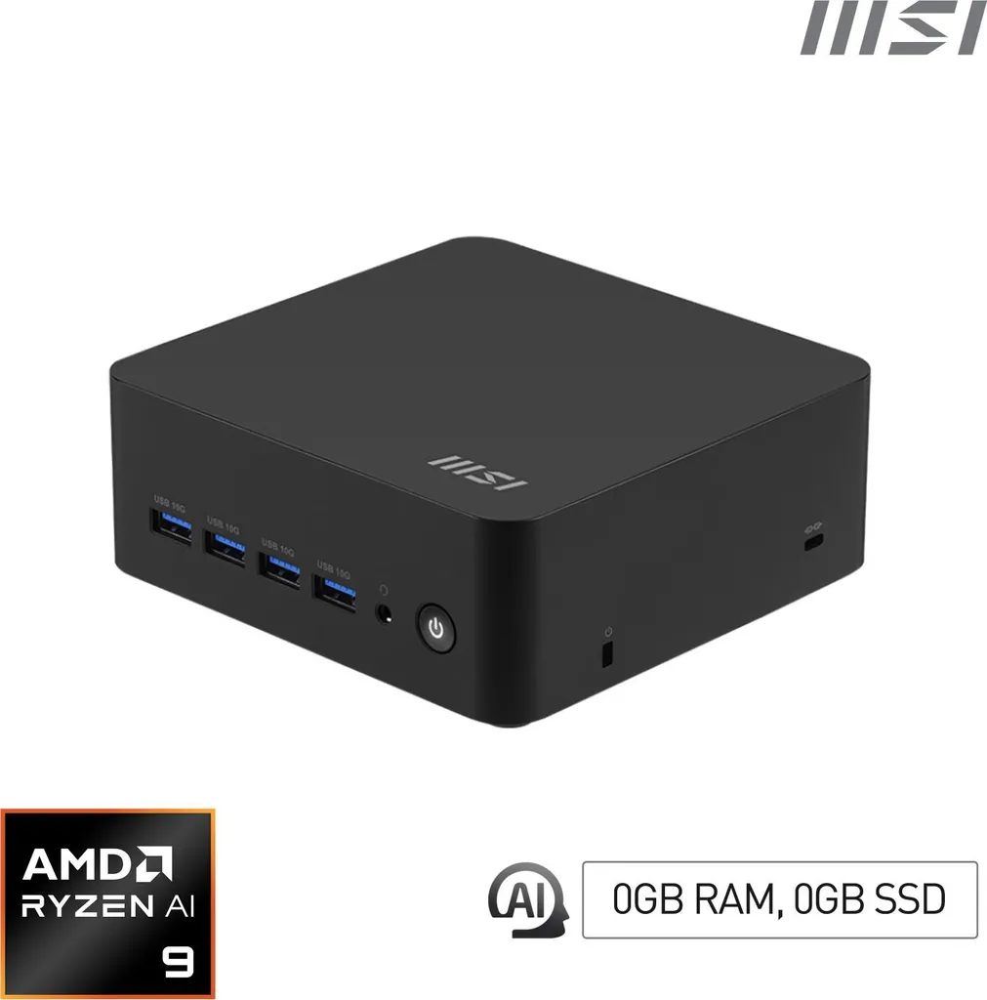
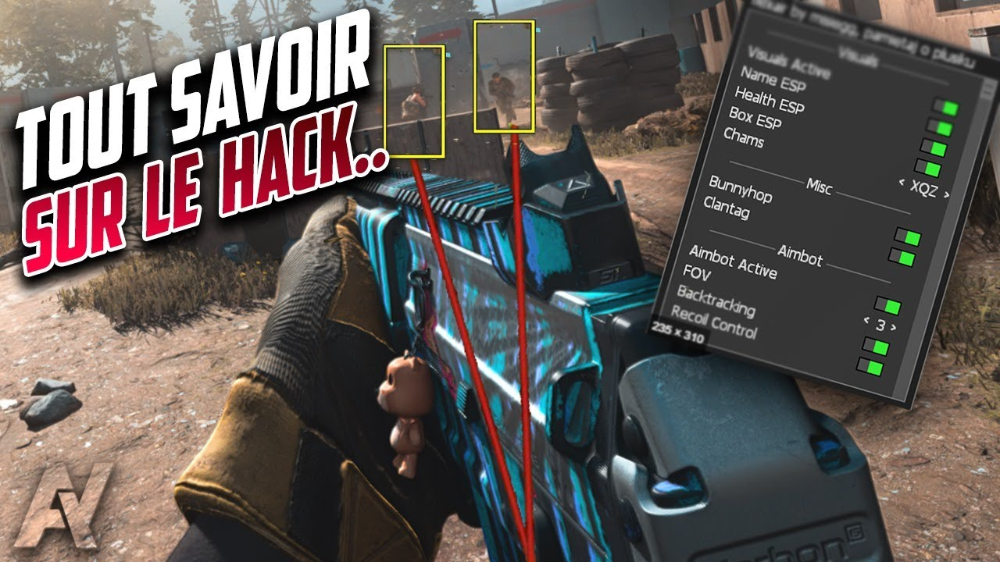

Mes veilles technologiques
Retrouvez ci-dessous mes deux présentations de veille technologique : l'une porte sur les Mini PC et leurs évolutions récentes, l'autre sur les logiciels de triche et leurs risques pour la sécurité informatique.
Deux veilles technologiques : Mini PC & Logiciels de triche
Retrouvez ci-dessous mes deux présentations de veille technologique : l'une porte sur les Mini PC et leurs évolutions récentes, l'autre sur les logiciels de triche et leurs risques pour la sécurité informatique.

Évolutions, usages et enjeux des ordinateurs compacts en 2025
Télécharger (PowerPoint)
Sensibilisation aux dangers des cheats et leurs conséquences
Télécharger (PowerPoint)Logiciels de triches analysés lors de ma veille technologique
Téléchargez mes documents professionnels
N'hésitez pas à me contacter pour toute opportunité
Vous pouvez me joindre pour toute opportunité professionnelle ou question
Chocolait94@hotmail.com